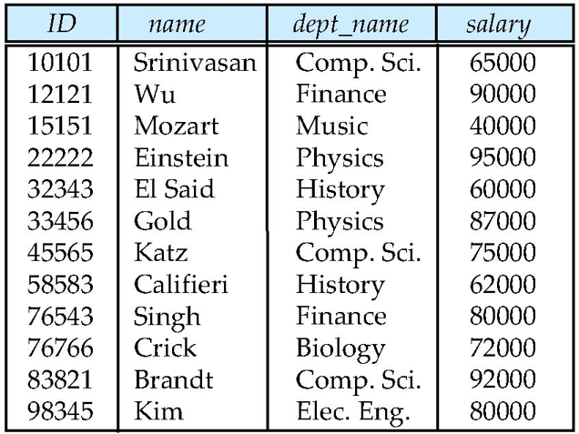
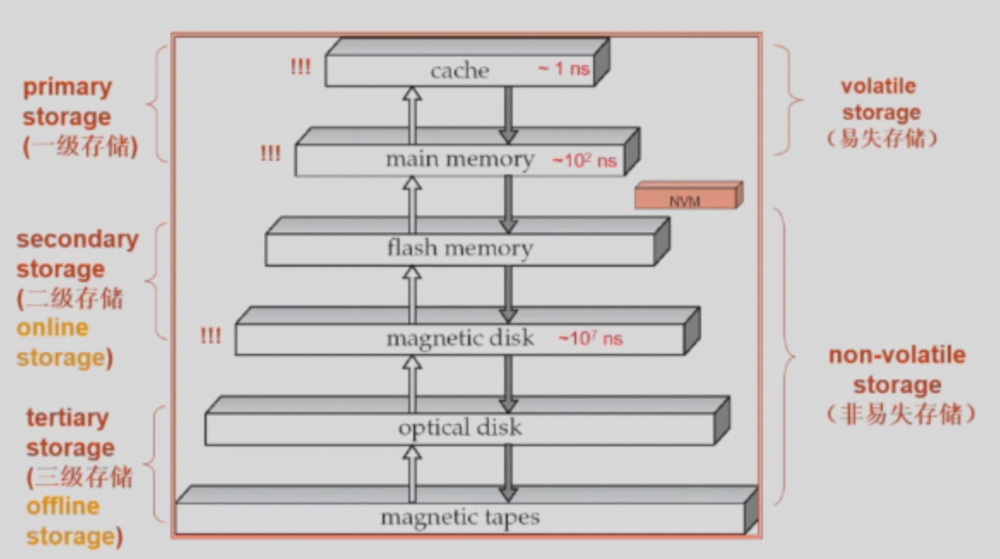
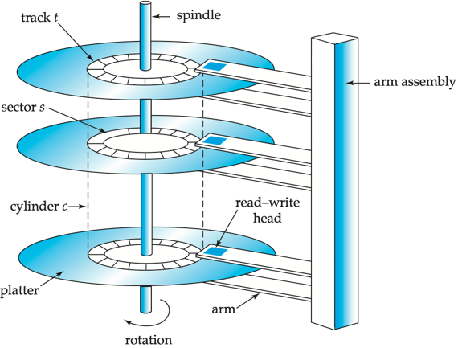

数据库系统
约 2443 个字 3 张图片 预计阅读时间 8 分钟
Abstract
课程信息 - 黄忠东老师授课。
-
参考用书：《Database System Concept》, 7th Edition
-
Grading Policy
这门课讲什么
在这门课程中，我们将学习到有严格事务要求(data access requirement)的结构化数据(data type)的管理。
特别感谢 Github 上@yile-liu老师的数据库系统笔记。
Relational Model¶
我们来看一个例子：

在这个例子中，蓝底的列名被称为attributes(属性)，下面的每一行被称为一个tuple(元组)。我们给定 \(A_1, A_2, …, A_n\) 是一系列 attributes ，那么
被称为relation schema。一般地，我们用 \(R\) 等大写字母表记一个 relation schema ，用 \(r\) 等小写字母表记一个 relation instance。
每一列的所有可取值(取值范围)被称为它的domain。我们给定列 \(A_i\) 的 domain 是 \(D_i\) ，那么从形式上说，一个relation就是 \(D_1 \times D_2 \times ... \times D_n\) 的一个子集。
换句话说，一个 relation instance 就是一张表格，每一行代表一个事物，每一列代表一项属性。
一个数据库(Database)就是由多个 relation 组成的。这一点在后续 SQL 部分还会有所体现。
我们定义一个概念：键(key)，并规定键 \(K \subseteq R~\mbox{(Relation Schema)}\)，键实际上就是一个列名。
-
\(K\) is a superkey of \(R\) if values for \(K\) are sufficient to identify a unique tuple of each possible relation \(r\).
-
Superkey \(K\) is a candidate key if the number of attributes in \(K\) is minimal (If we remove one more attribute in \(K\), \(K\) will not be a superkey).
Note that Candidate key can have more than one attribute.
-
One of the candidate keys is selected to be the primary key(主键).
-
Foreign key(外键) constraint: Value in one relation must appear in another.
Assume there exists relations \(r\) and \(s\): \(r(A,B,C)\), \(s(B,D)\), we can say that attribute \(B\) in relation \(r\) is foreign key referencing \(s\), and \(r\) is a referencing relation, and \(s\) is a referenced relation.
referencing relation 是“引用”，其表述的是外键所在的 relation ； referenced relation 是“被引用”，其表述的是被引用的键所在的 relation。
Relational Algebra¶
需要注意：
- 关系代数的输入和输出都是 relations。
基础操作¶
| 操作 | 表达式 | 含义 |
|---|---|---|
| 选择 | \(\sigma_{p}{(r)}\) | 单关系操作。返回关系 \(r\) 中满足关系式 \(p\) 的元组的关系 |
| 投影 | \(\Pi_{~A_1,A_2,...,A_3~}{(r)}\) | 单关系操作。返回关系 \(r\) 中属性为 \(A_1, A_2, ..., A_n\) 的列并去重 |
| 重命名 | \(\rho_{x}{(E)}\) | 单关系操作。将 \(E\) 重命名为 \(x\) 并返回 |
| 集合并 | \(r \cup s\) | 将两个属性数相等且所有属性的域相同的两个关系合并为同一个关系，并去重 |
| 集合差 | \(r - s\) | 返回属于关系 \(r\) 却不出现在关系 \(s\) 中的元组的关系 |
| 笛卡尔积 | \(r \times s\) | 返回任意两个关系的元组组合 (两个关系的属性应不相交，否则应重命名) |
进阶操作¶
| 操作 | 表达式 | 含义 |
|---|---|---|
| 集合交 | \(r \cap s\) | 取同时出现在两个关系中的元组，可转化为 \(r - (r - s)\) |
| 自然连接 | \(r \bowtie s\) | 取两个关系公共属性中具有相同属性值的元组进行拼接 |
| \(\theta\) 连接 | \(r \bowtie_{\theta} s\) | 返回满足关系式 \(\theta\) 的自然连接结果 |
| 外连接： 左外连接右外连接全外连接 |
\(r~⟕~s\)\(r~⟖~s\)\(r~⟗~s\) |
左外连接表示在保留左表所有记录的同时，进行 join 操作，以此类推。 |
| 除 | \(r \div s\) | \(r \div s = \{ t \mid t \in \Pi_{R - S}{(r)} \cap \forall u \in s (t \times u \in r) \}\)，找出与“除数”关系中所有元组都有联系的元组 |
| 赋值 | \(r \leftarrow E\) | 将右边的计算结果赋值给左边的表 |
聚集 |
\(_{G_1, G_2, ..., G_n}~\mathcal{G}_{F_1(A_1), F_2(A_2), ..., F_n(A_n)}{r}\) |
\(G_i\) 是用于分组的属性 (可为空) ，\(F_i\) 是聚集函数，\(A_i\) 是属性名。聚集操作对一组值执行计算并返回单个值，它对数据集合进行"纵向"计算 (跨多行计算)。假设已经指定用于分组的属性，则按指定属性将关系划分为多个组，对每个组独立应用聚合函数，每组产生一个结果元组 |
SQL¶
SQL ，全称结构化查询语言。
基础 SQL¶
进阶 SQL¶
存储¶
存储层级¶

上图中的是否易失是根据掉电后数据会不会丢失区分的。
磁盘存储接口¶
存储设备通常直接连接到计算机系统上，因此往往需要一个接口。目前一些主流的存储设备协议家族有：
-
SATA
最近的 SATA 3 理论带宽可以达到 6Gbps。
-
SAS
第三代 SAS 理论带宽可达 12Gbps ，第四代的理论带宽可达 22.5Gbps。
-
NVMe
是一种直接运行在 PCIe 总线上的高效协议。它通过 PCIe 接口访问非易失性数据，延迟更小，传输速度更快。 NVMe 2.0 采用 PCIe 5.0 x4 接口，理论带宽可达约 16GB/s。
我们也时不时需要在网络上存储数据。SAN 和 NAS 就是两种主流的网络存储架构。
-
SAN(Storage Area Networks ，存储区域网络)
A large number of disks are connected by a high-speed network to a number of servers.
-
NAS(Network Attached Storage ，网络附加存储)
Networked storage provides a file system interface using networked file system protocol, instead of providing a disk system interface.
磁盘工作机制¶
下图展示一个机械硬盘的结构：

-
读写磁头 (Read-write head)
-
定位在盘片表面极近处（几乎接触）
-
通过磁编码方式读取/写入信息
技术说明：现代硬盘采用气浮技术保持 3-10 纳米间距，称为"飞行高度"(Flying Height)
-
-
盘片表面划分
-
由同心圆状的磁道(Track)组成
-
典型硬盘每盘片含 50,000-100,000 条磁道
注：磁道密度随技术发展提升， HAMR(热辅助磁记录)技术可达 200k+TPI(每英寸磁道数)
-
-
磁道结构
-
每条磁道划分为扇区(Sector)
-
扇区是物理读写的最小数据单元
-
典型扇区大小： 512 字节（现代高级格式盘为 4K ）
-
每磁道扇区数：
内圈磁道： 500-1000 个
外圈磁道： 1000-2000 个
技术演进： ZBR(区位记录)技术使外圈磁道存储更多扇区
-
-
扇区访问机制
-
磁臂摆动使磁头定位到目标磁道
-
盘片持续旋转，当扇区经过磁头下方时完成读写
延迟组成：寻道时间(Seek Time) + 旋转延迟(Rotational Latency)
-
-
磁头-盘片组件(Head-Disk Assembly, HDA)
-
单个主轴安装多层盘片（通常 1-5 片）
-
每个盘面对应一个磁头，所有磁头安装在同一磁臂上
关键参数：面密度(Areal Density) = 磁道密度 × 线性密度
-
-
柱面(Cylinder)
- 由所有盘片的第 \(i\) 号磁道组成柱面 \(i\)
优化原理：同一柱面数据无需移动磁臂即可连续访问
有了主机系统和存储设备，我们还需要一个主机系统与物理存储设备之间的桥梁来实现管理和优化数据存取。磁盘管理器(Disk Controller)就担当了这一角色。
磁盘管理器：
-
接收高层读写扇区指令 (解析来自操作系统的读/写扇区命令)
-
启动磁盘操作：例如驱动磁头移动到指定磁道、执行物理层面的数据读写操作等
-
数据校验管理：为每个扇区计算并附加校验和(checksums) (如 CRC32/ECC)，读取时通过校验和验证数据完整性
- 错误检测机制：当数据损坏时，存储的校验和与重新计算值不匹配的概率极高
-
写入验证：采用“写后读”(Read-After-Write)技术确保写入成功
-
坏扇区处理：执行坏扇区重映射 (remapping of bad sectors ，通过备用扇区替换损坏区域)
磁盘性能评估¶
磁盘性能一般从以下维度评价：
-
Access time 访问时间
对 HDD 又可以细分为 Seek time 寻道时间 和 Rotation latency 旋转延迟。
-
Data-transfer rate 数据传输速率
-
IOPS 每秒 I/O 操作数
-
Mean time of failure(MTTF) 平均故障时间
根据所访问数据的储存位置，可以将访问分为随机访问 (Random access)和顺序访问 (Sequential access)。顺序访问的上限主要由传输速率决定；随机访问的上限主要由 IOPS 决定， IOPS 又主要由访问时间决定。
优化磁盘性能的常见方式主要有：
-
Buffering 缓冲区，避免重复读写相同数据
-
Read-ahead 预读取
-
Disk-arm-scheduling ：针对 HDD ，相比让磁头来回摇摆，适当重排 IO 请求使磁头有序移动能减少平均寻道时间
电梯算法
-
File Organization ：针对 HDD ，文件整理，使数据分布尽可能有序
-
Wear Leveling ：针对 NVM 和 SSD ，因为擦写寿命相对有限，需要实现负载均衡
闪存 Flash Storage¶
数据存储结构¶
从物理存储的层面上看，一个数据库由多个文件(files)组成，每个文件是记录(records)的有序序列，每条记录是字段(fields)的有序序列。
由于扇区的空间比较小且数目众多，在寻址时比较困难，所以操作系统就将多个扇区组合在一起，形成一个更大的单位，再对这个单位进行整体的操作。一般将这个单位称作块(blocks)。也就是说，操作系统是通过块来做为单位读取等操作数据的。而文件系统就是操作系统的一部分，所以文件系统操作文件的最小单位是块。
我们下面的讨论假设每条记录的大小都不超过一个块。